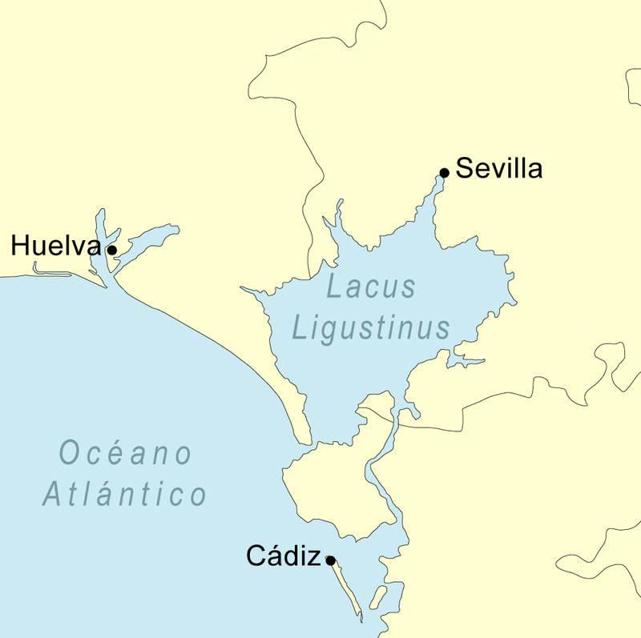
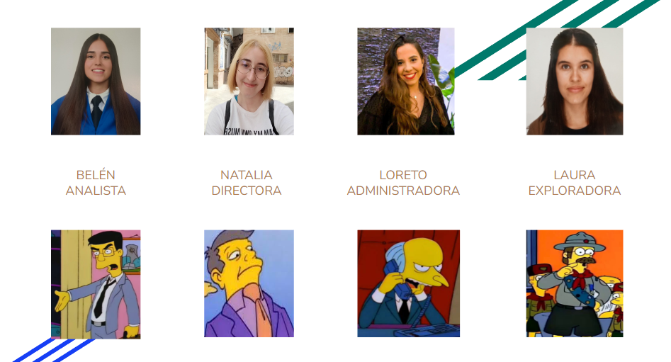
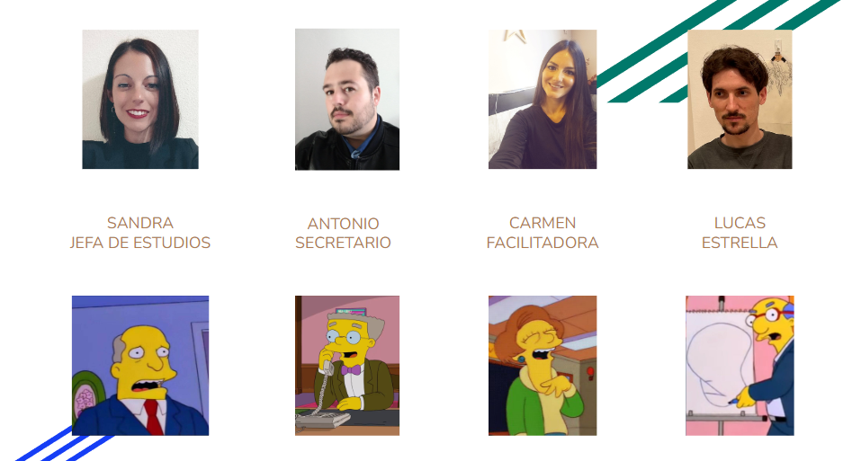
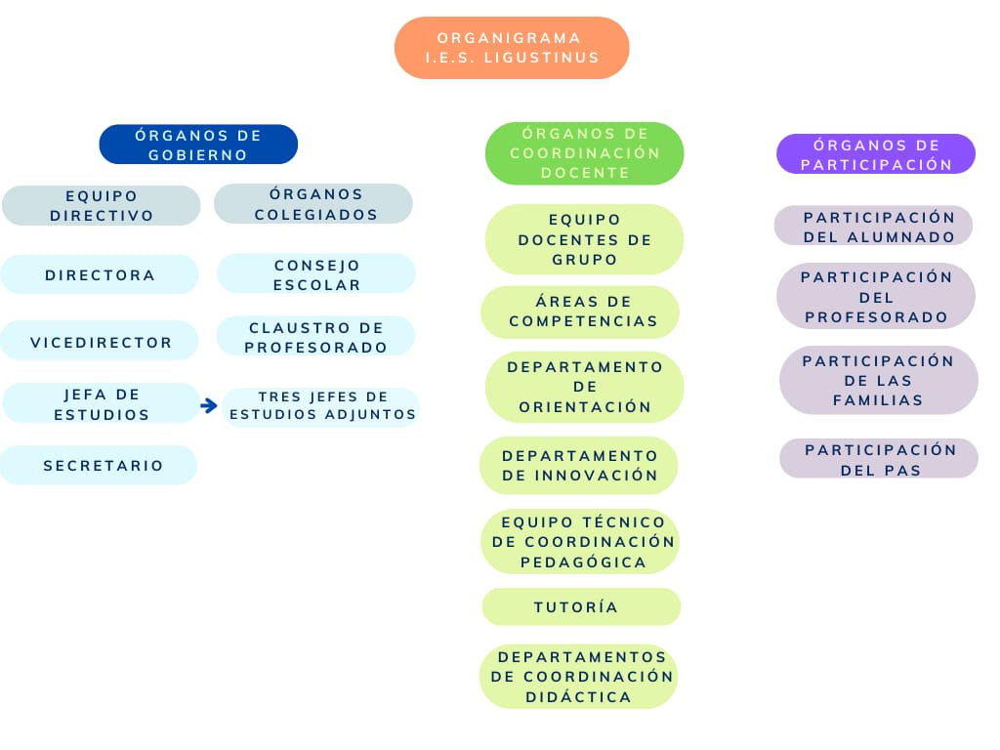
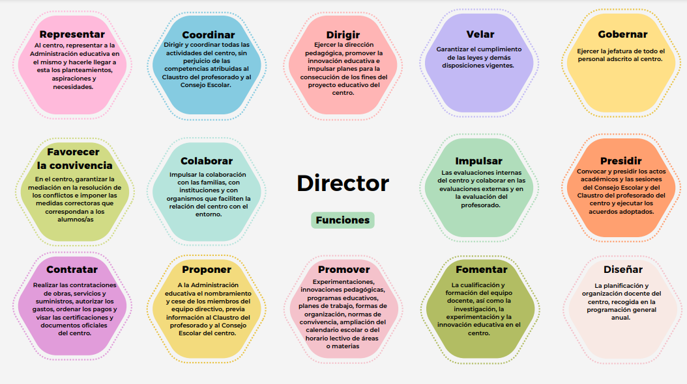
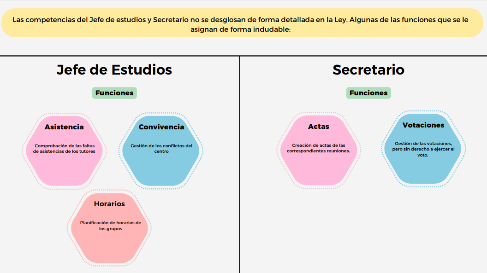
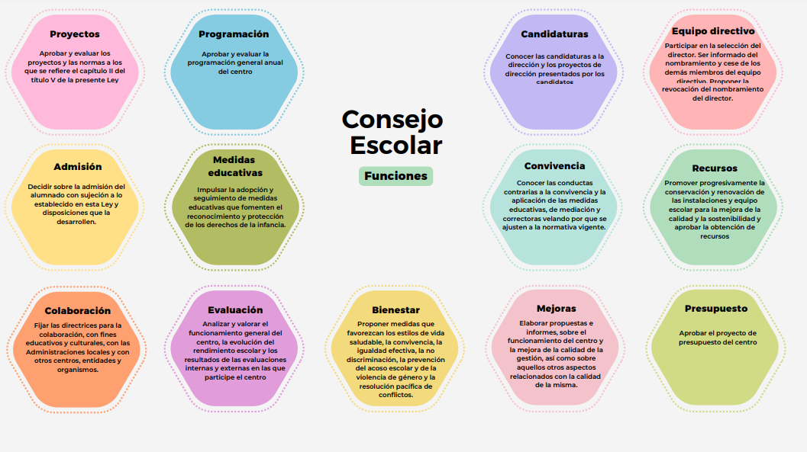
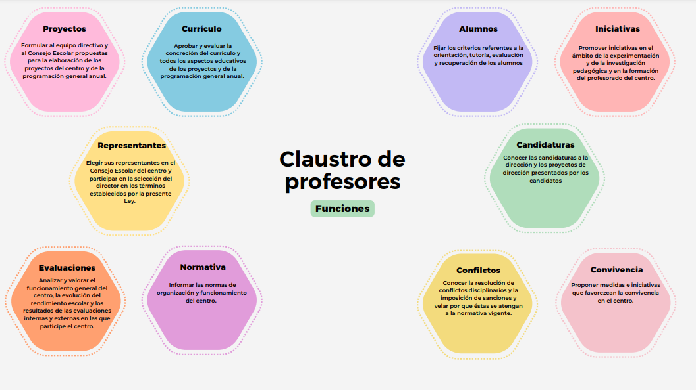
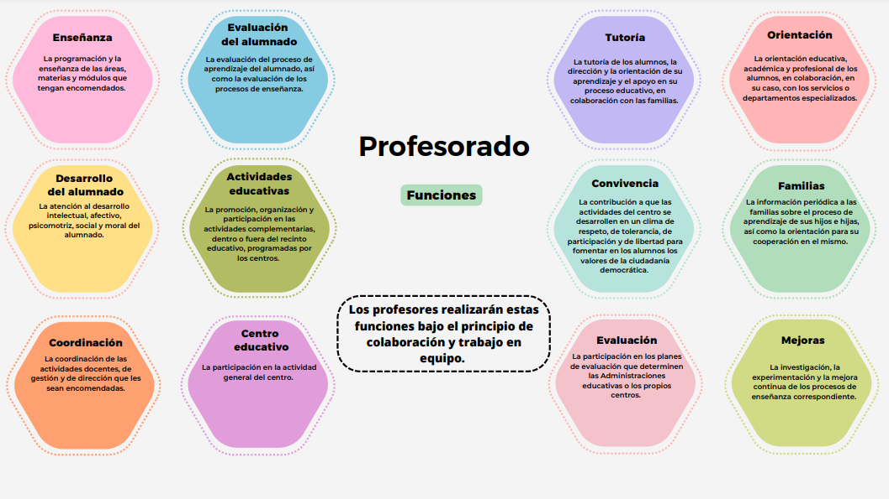

¿Por qué este nombre?
La denominación de nuestro centro hace referencia a:
- La zona geográfica donde se encuentra (Parque Nacional de Doñana y alrededores).
- Que, aunque ahora sean humedales, en la época prerromana era una albufera.
- El “lacus ligustinus”, cuna de la civilización tartésica, era casi un mar interior.
Al colmatarse el lago-mar, se creó toda la zona del coto y sus alrededores: Matalascañas, El Rocío, Isla Mayor y Sanlúcar de Barrameda. Este último donde se encuentra nuestro IES inspirador.

Organigrama



Plan de centro
- Proyecto educativo (contexto del centro, dónde se sitúa...).
- ROF (Reglamento de Organización y Funcionamiento con organigrama explicado en 10 páginas)
- Proyecto de Gestión (horarios, distribución de materiales...).
Funciones y Órganos Colegiados




